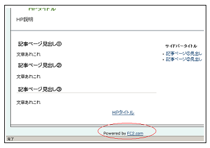

無料ホームページスペース比較
無料ホームページを利用する際、個人運営によるものではなく、企業が運営している無料ホームページスペースをお勧めします。個人運営の無料ホームページにも使いやすいものがあるとは思いますが、資金面などで運営中止になってしまうケースが多いです。
ツイッターなどのSNSが主流となっている現在、ユーザー数の減少により中小規模の無料ブログサービスが次々と運営中止になってきていますが、無料ホームページスペースについても同じことがいえます。
仮にサービス提供が終了となり、サイトが削除されてしまった場合、新しい移行先を用意されたとしてもサイトのURLが変わってしまうのでリンク切れが多発してしまいます。また、検索エンジンに認識されていた運営年数もリセットされますので、一からのやり直しとなってしまいます。
結果として検索順位が下落してしまい、アクセス数も激減してしまうため、最終的にはサイトを閉鎖せざるを得なくなってしまうかもしれません。
そのような意味でも、大手の会社が運営している無料ホームページスペースの中から選択されるとよいでしょう。
大手４社の無料ホームページスペースを比較
無料ホームページスペースとして知名度が高く、近い将来になくなる心配がないだろうと思われる無料サービス会社には以下の４つがあげられます。
■無料ホームページスペース
ヤフージオシティーズ【2019年3月31日：サービス終了】インフォシークホームページ【2010年10月：無料版は終了】
Googleサイトについては、現在では企業でのビジネス向けグループウェアとしての使い方がメインなのかもしれません。
【追記】：日本版ヤフージオシティーズは2019年3月31日にサービス終了が予定されています。ホームページを移転する際の手順はこちらのページなどをご参照ください。
→ 無料ホームページからレンタルサーバーへの引越方法
→ ヤフージオシティーズ終了後の転送設定
【追記】：ニフティの接続会員向け無料ホームページサービス「@homepage」が2016年に終了しました。
ニフティの無料ホームページが2016年にサービス終了
【追記】：日本のジオシティーズ付属サービスのジオログが2014年に終了しました。
【追記】：アメリカのジオシティーズは2009年になくなる予定です。
米のヤフージオシティーズは2009年中にサービス終了
また、「無料ホームページ」と「無料レンタルサーバー」はどちらもほぼ同じ意味ですが、無料ホームページスペースには作成ツールやランキングなどのポータル機能がある点や付属ツールなどが用意されている点で多少の違いがあります。
無料レンタルサーバーについては、有料レンタルサーバーの導入版と考えるとよいでしょう。
■無料レンタルサーバー
特におすすめなのはやはり、ヤフージオシティーズでしょうか。
カテゴリのページ登録やヤフーブログや日記ページなどのツール、有料ＨＰへのアップグレードの際の料金などを考えると、ヤフージオシティーズがいいように感じます。
ただし、無料版の場合は広告がけっこうでかいです。

広告を非表示にする際、ほかの無料ＨＰの場合は年間一括ばらいですが、ジオシティーズの場合は月払いが可能なので利用しやすいと思います。
選択するサブドメインについては、sky や sports などもサイト数が多いようですが、一番ぶなんなのは www ではないかなと思います。
その次というとＦＣ２でしょうか。
以前作成した際はちいさなＦＣ２へのリンクのみで、まったく広告が表示されなかったという記憶があります。

広告数が少なく、リンク先が少なければ、検索エンジン対策としても有利になりますし、広告といっても powerd by の意味のリンクですので、実質的には広告がゼロだと思います。
たいていの無料ホームページスペースにはキャッシングなどの広告がたくさん表示され、それが元で検索結果ではヒットにくいものですが、fc2 の場合はあまり影響がないかと思います。
また、エックスドメインでも無料レンタルサーバーが利用できるようになったみたいです。
こちらはドメインを取得していなくても利用できます。
レンタルサーバーで有名なエックスサーバーと同じ会社の無料レンタルサーバーです。無料ホームページスペースとして利用する際には、htmlサーバーとして利用するのが最適かと思います。
当サイト運営者は、有料のエックスサーバーを利用していますので、こちらの無料サーバーは利用してませんが、広告表示が小さいので利用しやすいかもしれません。
【追記：】こちらはエックスフリーになりました。
ほかにも忍者ホームページやインフォシークホームページが有名どころとなっています。
広告数は忍者の場合は５つ、インフォシークでは現在のところ５つ以上表示されていますが、ほかの無料スペースと比較するとまだ少ない方だと思います。
お金を出すなら独自ドメインでレンタルサーバー
費用が多少かかってもいいなという場合は、無料ホームページスペースを有料版にアップグレードするよりも、自分で独自ドメインを取得して、格安レンタルサーバーで作成する方が良いと思います。
格安サーバーを利用する場合ですと、独自ドメインの取得費用で年間約1,000円程度、サーバー代で年間2,500円程度ですので、月額換算200円～300円程度で済みます。
当サイトは以前はジオシティーズのライトで利用しておりましたが、費用は年間で3,780円でしたので、ドメインを取得してサーバーをレンタルした方がかえって安上がりかもしれません。
お金を出すなら独自ドメインを取得してレンタルサーバー、まったくの無料ならジオシティーズやＦＣ２などを利用することをおすすめします。
独自ドメインで作成するメリットは、自分で取得したドメインなら自分のものなんで自由ですが、無料スペースをレンタルしている場合は結局はサービス会社所有のものです。
運営を止めるといわれれば、自分のホームページも閉鎖せざるを得なくなってしまいます。
また、友達に自分のホームページを紹介する場合でも、無料スペースをレンタルしている場合は何かと紹介しずらいものですが、独自ドメインならカッコイイ！です。
加えて、取得したドメイン名でのメールアドレスも作成することができます。
この独自ドメインを取得して作成する際は、「個人用のレンタルサーバー」と「法人用のレンタルサーバー」がありますが、個人用のなかにも初心者簡単用の格安レンタルサーバーや本格派なタイプにわけることができます。
レンタルサーバーを利用する際は広告などの表示は一切ありませんし、たとえ利用しているサーバー会社が運営を終了したとしても、ドメインの設定を変えて違うサーバーに引越せばよいだけなので、サイトのURLが変わることなく安心して運営できます。